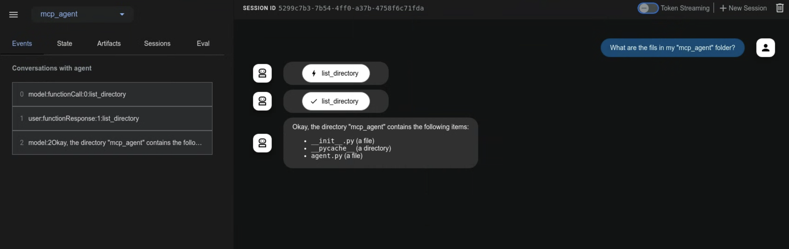

모델 컨텍스트 프로토콜 도구¶
이 가이드는 ADK와 MCP(Model Context Protocol)를 통합하는 두 가지 방법을 안내합니다.
MCP(모델 컨텍스트 프로토콜)란?¶
MCP(Model Context Protocol)는 Gemini 및 Claude와 같은 LLM(대규모 언어 모델)이 외부 애플리케이션, 데이터 소스 및 도구와 통신하는 방식을 표준화하도록 설계된 개방형 표준입니다. LLM이 컨텍스트를 얻고, 작업을 실행하고, 다양한 시스템과 상호 작용하는 방식을 단순화하는 범용 연결 메커니즘이라고 생각하면 됩니다.
MCP는 클라이언트-서버 아키텍처를 따르며, MCP 서버가 데이터(리소스), 대화형 템플릿(프롬프트) 및 실행 가능한 함수(도구)를 노출하고 MCP 클라이언트(LLM 호스트 애플리케이션 또는 AI 에이전트일 수 있음)가 이를 사용하는 방법을 정의합니다.
이 가이드에서는 두 가지 주요 통합 패턴을 다룹니다.
- ADK 내에서 기존 MCP 서버 사용: ADK 에이전트는 MCP 클라이언트 역할을 하여 외부 MCP 서버에서 제공하는 도구를 활용합니다.
- MCP 서버를 통해 ADK 도구 노출: ADK 도구를 래핑하여 모든 MCP 클라이언트가 액세스할 수 있도록 하는 MCP 서버를 구축합니다.
전제 조건¶
시작하기 전에 다음이 설정되어 있는지 확인하십시오.
- ADK 설정: 빠른 시작의 표준 ADK 설치 지침을 따르십시오.
- Python/Java 설치/업데이트: MCP는 Python 3.9 이상 또는 Java 17 이상 버전의 Python이 필요합니다.
- Node.js 및 npx 설정: (Python만 해당) 많은 커뮤니티 MCP 서버는 Node.js 패키지로 배포되며
npx를 사용하여 실행됩니다. 아직 설치하지 않은 경우 Node.js(npx 포함)를 설치하십시오. 자세한 내용은 https://nodejs.org/en을 참조하십시오. - 설치 확인: (Python만 해당) 활성화된 가상 환경 내에서
adk및npx가 PATH에 있는지 확인하십시오.
1. adk web에서 ADK 에이전트와 함께 MCP 서버 사용 (ADK를 MCP 클라이언트로)¶
이 섹션에서는 외부 MCP(모델 컨텍스트 프로토콜) 서버의 도구를 ADK 에이전트에 통합하는 방법을 보여줍니다. 이는 ADK 에이전트가 기존 서비스에서 제공하는 기능을 MCP 인터페이스를 통해 사용해야 할 때 가장 일반적인 통합 패턴입니다. McpToolset 클래스를 에이전트의 tools 목록에 직접 추가하여 MCP 서버에 원활하게 연결하고, 도구를 검색하고, 에이전트가 사용할 수 있도록 하는 방법을 확인할 수 있습니다. 이 예시는 주로 adk web 개발 환경 내에서의 상호 작용에 중점을 둡니다.
McpToolset 클래스¶
McpToolset 클래스는 ADK의 MCP 서버에서 도구를 통합하기 위한 주요 메커니즘입니다. 에이전트의 tools 목록에 McpToolset 인스턴스를 포함하면 지정된 MCP 서버와의 상호 작용을 자동으로 처리합니다. 작동 방식은 다음과 같습니다.
- 연결 관리: 초기화 시
McpToolset은 MCP 서버에 대한 연결을 설정하고 관리합니다. 이는 로컬 서버 프로세스(표준 입출력을 통한 통신을 위한StdioConnectionParams사용) 또는 원격 서버(Server-Sent Events를 위한SseConnectionParams사용)일 수 있습니다. 도구 세트는 또한 에이전트 또는 애플리케이션이 종료될 때 이 연결을 정상적으로 종료하는 것을 처리합니다. - 도구 검색 및 적응: 연결되면
McpToolset은 MCP 서버에 사용 가능한 도구를 쿼리합니다(list_tools MCP 메서드를 통해). 그런 다음 검색된 MCP 도구의 스키마를 ADK 호환BaseTool인스턴스로 변환합니다. - 에이전트에 노출: 이렇게 적응된 도구는 기본 ADK 도구인 것처럼
LlmAgent에서 사용할 수 있습니다. - 도구 호출 프록시:
LlmAgent가 이러한 도구 중 하나를 사용하기로 결정하면McpToolset은 투명하게 호출을 MCP 서버로 프록시(call_tool MCP 메서드 사용)하고 필요한 인수를 보내고 서버의 응답을 에이전트에 반환합니다. - 필터링(선택 사항):
McpToolset을 만들 때tool_filter매개변수를 사용하여 모든 도구를 에이전트에 노출하는 대신 MCP 서버에서 특정 도구 하위 집합을 선택할 수 있습니다.
다음 예시는 adk web 개발 환경 내에서 McpToolset을 사용하는 방법을 보여줍니다. MCP 연결 수명 주기에 대한 더 세부적인 제어가 필요하거나 adk web을 사용하지 않는 시나리오의 경우 이 페이지의 뒷부분에 있는 "adk web 외부에서 자체 에이전트에서 MCP 도구 사용" 섹션을 참조하십시오.
예시 1: 파일 시스템 MCP 서버¶
이 Python 예시는 파일 시스템 작업을 제공하는 로컬 MCP 서버에 연결하는 방법을 보여줍니다.
1단계: McpToolset으로 에이전트 정의¶
agent.py 파일(예: ./adk_agent_samples/mcp_agent/agent.py)을 생성합니다. McpToolset은 LlmAgent의 tools 목록 내에서 직접 인스턴스화됩니다.
- 중요:
args목록의"/path/to/your/folder"를 MCP 서버가 액세스할 수 있는 로컬 시스템의 실제 폴더에 대한 절대 경로로 바꿉니다. - 중요:
.env파일을./adk_agent_samples디렉토리의 상위 디렉토리에 배치합니다.
# ./adk_agent_samples/mcp_agent/agent.py
import os # 경로 작업에 필요
from google.adk.agents import LlmAgent
from google.adk.tools.mcp_tool import McpToolset
from google.adk.tools.mcp_tool.mcp_session_manager import StdioConnectionParams
from mcp import StdioServerParameters
# 가능하면 경로를 동적으로 정의하거나,
# 사용자가 ABSOLUTE 경로의 필요성을 이해하도록 해야 합니다.
# 이 예시에서는 이 파일과 동일한 디렉토리에 '/path/to/your/folder'가 있다고 가정하고,
# 상대 경로를 구성합니다.
# 필요한 경우 설정에 맞게 실제 절대 경로로 REPLACE THIS를 변경하십시오.
TARGET_FOLDER_PATH = os.path.join(os.path.dirname(os.path.abspath(__file__)), "/path/to/your/folder")
# TARGET_FOLDER_PATH가 MCP 서버의 절대 경로인지 확인하십시오.
# `./adk_agent_samples/mcp_agent/your_folder`를 생성한 경우,
root_agent = LlmAgent(
model='gemini-2.0-flash',
name='filesystem_assistant_agent',
instruction='사용자의 파일 관리를 돕습니다. 파일을 나열하고, 파일을 읽는 등의 작업을 할 수 있습니다.',
tools=[
McpToolset(
connection_params=StdioConnectionParams(
server_params = StdioServerParameters(
command='npx',
args=[
"-y", # npx가 자동 확인 설치를 위한 인수
"@modelcontextprotocol/server-filesystem",
# 중요: 이것은 npx 프로세스가 액세스할 수 있는 폴더의 절대 경로여야 합니다.
# 시스템의 유효한 절대 경로로 바꾸십시오.
# 예를 들어: "/Users/youruser/accessible_mcp_files"
# 또는 동적으로 구성된 절대 경로 사용:
os.path.abspath(TARGET_FOLDER_PATH),
],
),
),
# 선택 사항: MCP 서버에서 노출되는 도구를 필터링합니다.
# tool_filter=['list_directory', 'read_file']
)
],
)
2단계: __init__.py 파일 생성¶
agent.py와 동일한 디렉토리에 __init__.py가 있는지 확인하여 ADK에서 검색 가능한 Python 패키지로 만듭니다.
3단계: adk web 실행 및 상호 작용¶
터미널에서 mcp_agent의 상위 디렉토리(예: adk_agent_samples)로 이동하여 다음을 실행합니다.
Windows 사용자 참고 사항
_make_subprocess_transport NotImplementedError가 발생하는 경우 대신 adk web --no-reload를 사용하는 것을 고려하십시오.
ADK 웹 UI가 브라우저에 로드되면:
- 에이전트 드롭다운에서
filesystem_assistant_agent를 선택합니다. - 다음과 같은 프롬프트를 시도합니다.
- "현재 디렉토리의 파일 목록을 나열합니다."
- "sample.txt라는 파일을 읽을 수 있습니까?" (
TARGET_FOLDER_PATH에 생성했다고 가정). - "
another_file.md의 내용은 무엇입니까?"
에이전트가 MCP 파일 시스템 서버와 상호 작용하고 서버의 응답(파일 목록, 파일 내용)이 에이전트를 통해 전달되는 것을 볼 수 있습니다. npx 프로세스가 stderr로 출력하는 경우 adk web 콘솔(명령을 실행한 터미널)에도 로그가 표시될 수 있습니다.

Java의 경우 McpToolset을 초기화하는 에이전트를 정의하려면 다음 샘플을 참조하십시오.
package agents;
import com.google.adk.JsonBaseModel;
import com.google.adk.agents.LlmAgent;
import com.google.adk.agents.RunConfig;
import com.google.adk.runner.InMemoryRunner;
import com.google.adk.tools.mcp.McpTool;
import com.google.adk.tools.mcp.McpToolset;
import com.google.adk.tools.mcp.McpToolset.McpToolsAndToolsetResult;
import com.google.genai.types.Content;
import com.google.genai.types.Part;
import io.modelcontextprotocol.client.transport.ServerParameters;
import java.util.List;
import java.util.concurrent.CompletableFuture;
public class McpAgentCreator {
/**
* McpToolset을 초기화하고, stdio를 사용하여 MCP 서버에서 도구를 검색하고,
* 이 도구를 사용하여 LlmAgent를 생성하고, 에이전트에 프롬프트를 보내고,
* 도구 세트가 닫히도록 합니다.
* @param args 명령줄 인수(사용되지 않음).
*/
public static void main(String[] args) {
//참고: 폴더가 홈 외부인 경우 권한 문제가 발생할 수 있습니다.
String yourFolderPath = "~/path/to/folder";
ServerParameters connectionParams = ServerParameters.builder("npx")
.args(List.of(
"-y",
"@modelcontextprotocol/server-filesystem",
yourFolderPath
))
.build();
try {
CompletableFuture<McpToolsAndToolsetResult> futureResult =
McpToolset.fromServer(connectionParams, JsonBaseModel.getMapper());
McpToolsAndToolsetResult result = futureResult.join();
try (McpToolset toolset = result.getToolset()) {
List<McpTool> tools = result.getTools();
LlmAgent agent = LlmAgent.builder()
.model("gemini-2.0-flash")
.name("enterprise_assistant")
.description("사용자가 파일 시스템에 액세스하도록 돕는 에이전트")
.instruction(
"사용자가 파일 시스템에 액세스하도록 돕습니다. 디렉토리의 파일을 나열할 수 있습니다."
)
.tools(tools)
.build();
System.out.println("에이전트 생성: " + agent.name());
InMemoryRunner runner = new InMemoryRunner(agent);
String userId = "user123";
String sessionId = "1234";
String promptText = "이 디렉토리의 파일은 무엇입니까? - " + yourFolderPath + "?";
// 세션을 명시적으로 먼저 생성
try {
// InMemoryRunner의 appName은 생성자에서 지정되지 않으면 agent.name()으로 기본 설정됩니다.
runner.sessionService().createSession(runner.appName(), userId, null, sessionId).blockingGet();
System.out.println("세션 생성: " + sessionId + "(사용자: " + userId + ")");
} catch (Exception sessionCreationException) {
System.err.println("세션 생성 실패: " + sessionCreationException.getMessage());
sessionCreationException.printStackTrace();
return;
}
Content promptContent = Content.fromParts(Part.fromText(promptText));
System.out.println("\n프롬프트 전송: \"" + promptText + "\" 에이전트에...\n");
runner.runAsync(userId, sessionId, promptContent, RunConfig.builder().build())
.blockingForEach(event -> {
System.out.println("이벤트 수신: " + event.toJson());
});
}
} catch (Exception e) {
System.err.println("오류 발생: " + e.getMessage());
e.printStackTrace();
}
}
}
first, second, third라는 세 파일이 포함된 폴더를 가정하면 성공적인 응답은 다음과 같습니다.
Event received: {"id":"163a449e-691a-48a2-9e38-8cadb6d1f136","invocationId":"e-c2458c56-e57a-45b2-97de-ae7292e505ef","author":"enterprise_assistant","content":{"parts":[{"functionCall":{"id":"adk-388b4ac2-d40e-4f6a-bda6-f051110c6498","args":{"path":"~/home-test"},"name":"list_directory"}}],"role":"model"},"actions":{"stateDelta":{},"artifactDelta":{},"requestedAuthConfigs":{}},"timestamp":1747377543788}
Event received: {"id":"8728380b-bfad-4d14-8421-fa98d09364f1","invocationId":"e-c2458c56-e57a-45b2-97de-ae7292e505ef","author":"enterprise_assistant","content":{"parts":[{"functionResponse":{"id":"adk-388b4ac2-d40e-4f6a-bda6-f051110c6498","name":"list_directory","response":{"text_output":[{"text":"[FILE] first\n[FILE] second\n[FILE] third"}]}}}],"role":"user"},"actions":{"stateDelta":{},"artifactDelta":{},"requestedAuthConfigs":{}},"timestamp":1747377544679}
Event received: {"id":"8fe7e594-3e47-4254-8b57-9106ad8463cb","invocationId":"e-c2458c56-e57a-45b2-97de-ae7292e505ef","author":"enterprise_assistant","content":{"parts":[{"text":"디렉토리에는 first, second, third의 세 파일이 있습니다."}],"role":"model"},"actions":{"stateDelta":{},"artifactDelta":{},"requestedAuthConfigs":{}},"timestamp":1747377544689}
예시 2: Google Maps MCP 서버¶
이 예시는 Google Maps MCP 서버에 연결하는 방법을 보여줍니다.
1단계: API 키 가져오기 및 API 활성화¶
- Google Maps API 키: API 키 사용의 지침에 따라 Google Maps API 키를 얻습니다.
- API 활성화: Google Cloud 프로젝트에서 다음 API가 활성화되어 있는지 확인합니다.
- Directions API
- Routes API 지침은 Google Maps Platform 시작하기 문서를 참조하십시오.
2단계: Google Maps용 McpToolset으로 에이전트 정의¶
agent.py 파일(예: ./adk_agent_samples/mcp_agent/agent.py)을 수정합니다. YOUR_GOOGLE_MAPS_API_KEY를 얻은 실제 API 키로 바꿉니다.
# ./adk_agent_samples/mcp_agent/agent.py
import os
from google.adk.agents import LlmAgent
from google.adk.tools.mcp_tool import McpToolset
from google.adk.tools.mcp_tool.mcp_session_manager import StdioConnectionParams
from mcp import StdioServerParameters
# 환경 변수에서 API 키를 검색하거나 직접 삽입합니다.
# 환경 변수를 사용하는 것이 일반적으로 더 안전합니다.
# 'adk web'을 실행하는 터미널에서 이 환경 변수가 설정되어 있는지 확인하십시오.
# 예시: export GOOGLE_MAPS_API_KEY="YOUR_ACTUAL_KEY"
google_maps_api_key = os.environ.get("GOOGLE_MAPS_API_KEY")
if not google_maps_api_key:
# 테스트를 위한 대체 또는 직접 할당 - 프로덕션에는 권장되지 않습니다.
google_maps_api_key = "YOUR_GOOGLE_MAPS_API_KEY_HERE" # 환경 변수를 사용하지 않는 경우 바꾸십시오.
if google_maps_api_key == "YOUR_GOOGLE_MAPS_API_KEY_HERE":
print("경고: GOOGLE_MAPS_API_KEY가 설정되지 않았습니다. 환경 변수로 설정하거나 스크립트에서 설정하십시오.")
# 키가 중요하고 찾을 수 없는 경우 오류를 발생시키거나 종료할 수 있습니다.
root_agent = LlmAgent(
model='gemini-2.0-flash',
name='maps_assistant_agent',
instruction='Google 지도 도구를 사용하여 매핑, 길 찾기 및 장소 찾기 작업을 돕습니다.',
tools=[
McpToolset(
connection_params=StdioConnectionParams(
server_params = StdioServerParameters(
command='npx',
args=[
"-y",
"@modelcontextprotocol/server-google-maps",
],
# API 키를 npx 프로세스에 환경 변수로 전달합니다.
# 이것이 Google Maps용 MCP 서버가 키를 기대하는 방식입니다.
env={
"GOOGLE_MAPS_API_KEY": google_maps_api_key
}
),
),
# 필요한 경우 특정 지도 도구에 대한 필터를 지정할 수 있습니다.
# tool_filter=['get_directions', 'find_place_by_id']
)
],
)
3단계: __init__.py가 있는지 확인¶
예시 1에서 생성한 경우 이 단계를 건너뛸 수 있습니다. 그렇지 않으면 ./adk_agent_samples/mcp_agent/ 디렉토리에 __init__.py가 있는지 확인하십시오.
4단계: adk web 실행 및 상호 작용¶
-
환경 변수 설정(권장):
adk web을 실행하기 전에 터미널에서 Google Maps API 키를 환경 변수로 설정하는 것이 가장 좋습니다.YOUR_ACTUAL_GOOGLE_MAPS_API_KEY를 키로 바꿉니다. -
adk web실행:mcp_agent의 상위 디렉토리(예:adk_agent_samples)로 이동하여 다음을 실행합니다.shell cd ./adk_agent_samples # 또는 해당 상위 디렉토리 adk web -
UI에서 상호 작용:
maps_assistant_agent를 선택합니다.- 다음과 같은 프롬프트를 시도합니다.
- "GooglePlex에서 SFO까지 길 찾기."
- "골든게이트 공원 근처의 커피숍 찾기."
- "프랑스 파리에서 독일 베를린까지 가는 길은?"
에이전트가 Google Maps MCP 도구를 사용하여 길 찾기 또는 위치 기반 정보를 제공하는 것을 볼 수 있습니다.

Java의 경우 McpToolset을 초기화하는 에이전트를 정의하려면 다음 샘플을 참조하십시오.
package agents;
import com.google.adk.JsonBaseModel;
import com.google.adk.agents.LlmAgent;
import com.google.adk.agents.RunConfig;
import com.google.adk.runner.InMemoryRunner;
import com.google.adk.tools.mcp.McpTool;
import com.google.adk.tools.mcp.McpToolset;
import com.google.adk.tools.mcp.McpToolset.McpToolsAndToolsetResult;
import com.google.genai.types.Content;
import com.google.genai.types.Part;
import io.modelcontextprotocol.client.transport.ServerParameters;
import java.util.List;
import java.util.Map;
import java.util.Collections;
import java.util.HashMap;
import java.util.concurrent.CompletableFuture;
import java.util.Arrays;
public class MapsAgentCreator {
/**
* Google 지도용 McpToolset을 초기화하고, 도구를 검색하고,
* LlmAgent를 생성하고, 지도 관련 프롬프트를 보내고, 도구 세트를 닫습니다.
* @param args 명령줄 인수(사용되지 않음).
*/
public static void main(String[] args) {
// TODO: Places API가 활성화된 프로젝트에서 실제 Google Maps API 키로 바꾸십시오.
String googleMapsApiKey = "YOUR_GOOGLE_MAPS_API_KEY";
Map<String, String> envVariables = new HashMap<>();
envVariables.put("GOOGLE_MAPS_API_KEY", googleMapsApiKey);
ServerParameters connectionParams = ServerParameters.builder("npx")
.args(List.of(
"-y",
"@modelcontextprotocol/server-google-maps"
))
.env(Collections.unmodifiableMap(envVariables))
.build();
try {
CompletableFuture<McpToolsAndToolsetResult> futureResult =
McpToolset.fromServer(connectionParams, JsonBaseModel.getMapper());
McpToolsAndToolsetResult result = futureResult.join();
try (McpToolset toolset = result.getToolset()) {
List<McpTool> tools = result.getTools();
LlmAgent agent = LlmAgent.builder()
.model("gemini-2.0-flash")
.name("maps_assistant")
.description("지도 도우미")
.instruction("사용 가능한 도구를 사용하여 지도 및 길 찾기를 돕습니다.")
.tools(tools)
.build();
System.out.println("에이전트 생성: " + agent.name());
InMemoryRunner runner = new InMemoryRunner(agent);
String userId = "maps-user-" + System.currentTimeMillis();
String sessionId = "maps-session-" + System.currentTimeMillis();
String promptText = "Madison Square Garden에서 가장 가까운 약국으로 가는 길을 알려주세요.";
try {
runner.sessionService().createSession(runner.appName(), userId, null, sessionId).blockingGet();
System.out.println("세션 생성: " + sessionId + "(사용자: " + userId + ")");
} catch (Exception sessionCreationException) {
System.err.println("세션 생성 실패: " + sessionCreationException.getMessage());
sessionCreationException.printStackTrace();
return;
}
Content promptContent = Content.fromParts(Part.fromText(promptText));
System.out.println("\n프롬프트 전송: \"" + promptText + "\" 에이전트에...\n");
runner.runAsync(userId, sessionId, promptContent, RunConfig.builder().build())
.blockingForEach(event -> {
System.out.println("이벤트 수신: " + event.toJson());
});
}
} catch (Exception e) {
System.err.println("오류 발생: " + e.getMessage());
e.printStackTrace();
}
}
}
성공적인 응답은 다음이 될 수 있습니다.
Event received: {"id":"1a4deb46-c496-4158-bd41-72702c773368","invocationId":"e-48994aa0-531c-47be-8c57-65215c3e0319","author":"maps_assistant","content":{"parts":[{"text":"OK. 選択肢がいくつかあります。最も近いのは、米国ニューヨーク州ニューヨーク市ペンシルバニアプラザ5番地にあるCVSファーマシーです。道案内が必要ですか？\n"}],"role":"model"},"actions":{"stateDelta":{},"artifactDelta":{},"requestedAuthConfigs":{}},"timestamp":1747380026642}
2. ADK 도구로 MCP 서버 구축 (ADK를 공개하는 MCP 서버)¶
이 패턴을 사용하면 기존 ADK 도구를 래핑하여 모든 표준 MCP 클라이언트 애플리케이션에서 사용할 수 있습니다. 이 섹션의 예시는 ADK의 load_web_page 도구를 사용자 정의 MCP 서버를 통해 노출하는 방법을 보여줍니다.
단계 개요¶
mcp 라이브러리를 사용하여 표준 Python MCP 서버 애플리케이션을 만듭니다. 이 서버 내에서 다음을 수행합니다.
- 노출할 ADK 도구(예:
FunctionTool(load_web_page))를 인스턴스화합니다. - ADK 도구 정의를 MCP 스키마로 변환하기 위해
google.adk.tools.mcp_tool.conversion_utils의adk_to_mcp_tool_type유틸리티를 사용하는 것을 포함하여, 노출할 도구를 나열하는 MCP 서버의@app.list_tools()핸들러를 구현합니다. - MCP 서버의
@app.call_tool()핸들러를 구현합니다. 이 핸들러는 다음을 수행합니다.- MCP 클라이언트로부터 도구 호출 요청을 수신합니다.
- 요청이 래핑된 ADK 도구 중 하나를 대상으로 하는지 식별합니다.
- ADK 도구의
.run_async()메서드를 실행합니다. - ADK 도구의 결과를 MCP 호환 형식(예:
mcp.types.TextContent)으로 형식화합니다.
전제 조건¶
ADK 설치와 동일한 Python 환경에 MCP 서버 라이브러리를 설치합니다.
단계 1: MCP 서버 스크립트 만들기¶
MCP 서버에 대한 새 Python 파일을 만듭니다. 예를 들어 my_adk_mcp_server.py입니다.
단계 2: 서버 로직 구현¶
my_adk_mcp_server.py에 다음 코드를 추가합니다. 이 스크립트는 ADK load_web_page 도구를 노출하는 MCP 서버를 설정합니다.
# my_adk_mcp_server.py
import asyncio
import json
import os
from dotenv import load_dotenv
# MCP 서버 가져오기
from mcp import types as mcp_types # 충돌을 피하기 위해 별칭 사용
from mcp.server.lowlevel import Server, NotificationOptions
from mcp.server.models import InitializationOptions
import mcp.server.stdio # stdio 서버로 실행하기 위해
# ADK 도구 가져오기
from google.adk.tools.function_tool import FunctionTool
from google.adk.tools.load_web_page import load_web_page # ADK 도구 예시
# ADK <-> MCP 변환 유틸리티
from google.adk.tools.mcp_tool.conversion_utils import adk_to_mcp_tool_type
# --- 환경 변수 로드 (ADK 도구에서 필요한 경우, 예: API 키) ---
load_dotenv() # 필요한 경우 동일한 디렉토리에 .env 파일 만들기
# --- ADK 도구 준비 ---
# 노출할 ADK 도구를 인스턴스화합니다.
# 이 도구는 MCP 서버에 의해 래핑되고 호출됩니다.
print("ADK load_web_page 도구를 초기화 중...")
adk_tool_to_expose = FunctionTool(load_web_page)
print(f"ADK 도구 '{adk_tool_to_expose.name}'이(가) 초기화되었으며 MCP를 통해 노출될 준비가 되었습니다.")
# --- ADK 도구 준비 종료 ---
# --- MCP 서버 설정 ---
print("MCP 서버 인스턴스를 만드는 중...")
# mcp.server 라이브러리를 사용하여 이름이 지정된 MCP 서버 인스턴스를 만듭니다
app = Server("adk-tool-exposing-mcp-server")
# 사용 가능한 도구를 나열하는 MCP 서버의 핸들러를 구현합니다
@app.list_tools()
async def list_mcp_tools() -> list[mcp_types.Tool]:
"""이 서버가 노출하는 도구를 나열하는 MCP 핸들러."""
print("MCP 서버: list_tools 요청을 받았습니다.")
# ADK 도구 정의를 MCP 도구 스키마 형식으로 변환합니다
mcp_tool_schema = adk_to_mcp_tool_type(adk_tool_to_expose)
print(f"MCP 서버: 도구 광고 중: {mcp_tool_schema.name}")
return [mcp_tool_schema]
# 도구 호출을 실행하는 MCP 서버의 핸들러를 구현합니다
@app.call_tool()
async def call_mcp_tool(
name: str,
arguments: dict
) -> list[mcp_types.Content]: # MCP는 mcp_types.Content를 사용합니다
"""MCP 클라이언트로부터 요청된 도구 호출을 실행하는 MCP 핸들러."""
print(f"MCP 서버: '{name}'에 대한 call_tool 요청을 받았습니다 (인수: {arguments})")
# 요청된 도구 이름이 래핑된 ADK 도구와 일치하는지 확인합니다
if name == adk_tool_to_expose.name:
try:
# ADK 도구의 run_async 메서드를 실행합니다.
# 참고: 이 MCP 서버는 완전한 ADK Runner 호출 외부에서 ADK 도구를 실행하므로,
# 여기서는 tool_context가 None입니다.
# ADK 도구가 ToolContext 기능(상태 또는 인증 등)을 필요로 하는 경우,
# 이 직접 호출에는 더 정교한 처리가 필요할 수 있습니다.
adk_tool_response = await adk_tool_to_expose.run_async(
args=arguments,
tool_context=None,
)
print(f"MCP 서버: ADK 도구 '{name}'이(가) 실행되었습니다. 응답: {adk_tool_response}")
# ADK 도구의 응답(종종 사전)을 MCP 호환 형식으로 형식화합니다.
# 여기서는 응답 사전을 TextContent 내의 JSON 문자열로 직렬화합니다.
# ADK 도구의 출력과 클라이언트의 요구 사항에 따라 형식을 조정합니다.
response_text = json.dumps(adk_tool_response, indent=2)
# MCP는 mcp_types.Content 파트 목록을 기대합니다
return [mcp_types.TextContent(type="text", text=response_text)]
except Exception as e:
print(f"MCP 서버: ADK 도구 '{name}' 실행 중 오류 발생: {e}")
# MCP 형식으로 오류 메시지를 반환합니다
error_text = json.dumps({"error": f"도구 '{name}' 실행 실패: {str(e)}"})
return [mcp_types.TextContent(type="text", text=error_text)]
else:
# 알 수 없는 도구에 대한 호출 처리
print(f"MCP 서버: 도구 '{name}'은(는) 이 서버에서 구현되지 않았거나 공개되지 않았습니다.")
error_text = json.dumps({"error": f"도구 '{name}'은(는) 이 서버에서 구현되지 않았습니다."})
return [mcp_types.TextContent(type="text", text=error_text)]
# --- MCP 서버 실행기 ---
async def run_mcp_stdio_server():
"""표준 입출력을 통해 연결을 수신 대기하는 MCP 서버를 실행합니다."""
# mcp.server.stdio 라이브러리의 stdio_server 컨텍스트 관리자를 사용합니다
async with mcp.server.stdio.stdio_server() as (read_stream, write_stream):
print("MCP Stdio 서버: 클라이언트와 핸드셰이크 시작 중...")
await app.run(
read_stream,
write_stream,
InitializationOptions(
server_name=app.name, # 위에서 정의한 서버 이름 사용
server_version="0.1.0",
capabilities=app.get_capabilities(
# 서버 기능 정의 - 옵션은 MCP 설명서 참조
notification_options=NotificationOptions(),
experimental_capabilities={},
),
),
)
print("MCP Stdio 서버: 실행 루프가 완료되었거나 클라이언트가 연결 해제되었습니다.")
if __name__ == "__main__":
print("stdio를 통해 ADK 도구를 노출하기 위해 MCP 서버를 시작합니다...")
try:
asyncio.run(run_mcp_stdio_server())
except KeyboardInterrupt:
print("\nMCP 서버 (stdio)가 사용자에 의해 중지되었습니다.")
except Exception as e:
print(f"MCP 서버 (stdio)에서 오류 발생: {e}")
finally:
print("MCP 서버 (stdio) 프로세스가 종료됩니다.")
# --- MCP 서버 종료 ---
단계 3: 사용자 정의 MCP 서버를 ADK 에이전트로 테스트¶
이제 구축한 MCP 서버의 클라이언트로 작동하는 ADK 에이전트를 만듭니다. 이 ADK 에이전트는 McpToolset을 사용하여 my_adk_mcp_server.py 스크립트에 연결합니다.
agent.py를 만듭니다 (예: ./adk_agent_samples/mcp_client_agent/agent.py).
# ./adk_agent_samples/mcp_client_agent/agent.py
import os
from google.adk.agents import LlmAgent
from google.adk.tools.mcp_tool import McpToolset
from google.adk.tools.mcp_tool.mcp_session_manager import StdioConnectionParams
from mcp import StdioServerParameters
# 중요: 이것을 my_adk_mcp_server.py 스크립트에 대한 절대 경로로 바꾸십시오
PATH_TO_YOUR_MCP_SERVER_SCRIPT = "/path/to/your/my_adk_mcp_server.py" # <<< 바꾸십시오
if PATH_TO_YOUR_MCP_SERVER_SCRIPT == "/path/to/your/my_adk_mcp_server.py":
print("경고: PATH_TO_YOUR_MCP_SERVER_SCRIPT가 설정되지 않았습니다. agent.py에서 업데이트하십시오.")
# 옵션으로, 경로가 중요하면 오류 발생
root_agent = LlmAgent(
model='gemini-2.0-flash',
name='web_reader_mcp_client_agent',
instruction="사용자가 제공한 URL에서 콘텐츠를 가져오기 위해 'load_web_page' 도구를 사용하십시오.",
tools=[
McpToolset(
connection_params=StdioConnectionParams(
server_params = StdioServerParameters(
command='python3', # MCP 서버 스크립트를 실행하는 명령
args=[PATH_TO_YOUR_MCP_SERVER_SCRIPT], # 스크립트에 대한 경로가 인수입니다
)
)
# tool_filter=['load_web_page'] # 옵션: 특정 도구만 로드되도록 합니다
)
],
)
그리고 같은 디렉토리에 __init__.py를 배치합니다.
테스트를 실행하려면:
-
사용자 정의 MCP 서버 시작 (옵션, 별도 모니터링용): 하나의 터미널에서
"Launching MCP Server..."가 출력되고 대기합니다. ADK 에이전트 (my_adk_mcp_server.py를 직접 실행하여 로그를 볼 수 있습니다.adk web을 통해 실행)는StdioConnectionParams의command가 이를 실행하도록 설정된 경우 이 프로세스에 연결합니다. (또는McpToolset은 에이전트가 초기화될 때 이 서버 스크립트를 하위 프로세스로 자동 시작합니다.) -
클라이언트 에이전트에 대해
adk web실행:mcp_client_agent의 상위 디렉토리 (예:adk_agent_samples)로 이동하여 다음 명령을 실행합니다. -
ADK Web UI에서 상호 작용:
web_reader_mcp_client_agent를 선택합니다.- "https://example.com에서 콘텐츠 읽기"와 같은 프롬프트를 시도합니다.
ADK 에이전트 (web_reader_mcp_client_agent)는 McpToolset을 사용하여 my_adk_mcp_server.py를 시작하고 연결합니다. MCP 서버는 call_tool 요청을 수신하고 ADK load_web_page 도구를 실행하여 결과를 반환합니다. ADK 에이전트는 이 정보를 전달합니다. ADK Web UI (및 해당 터미널)와 별도로 실행된 경우 my_adk_mcp_server.py 터미널 모두에서 로그를 볼 수 있어야 합니다.
이 예시는 ADK 도구가 MCP 서버 내에 캡슐화되어 ADK 에이전트뿐만 아니라 더 광범위한 MCP 호환 클라이언트에서도 액세스할 수 있는 방법을 보여줍니다.
Claude Desktop에서 시도하려면 문서를 참조하십시오.
adk web 외부에서 자체 Agent에서 MCP 도구 사용¶
이 섹션은 다음 경우에 적용됩니다.
- ADK를 사용하여 자체 Agent를 개발 중
- 그리고
adk web을 사용하지 않음 - 그리고 자체 UI를 통해 Agent를 노출 중
MCP 도구를 사용하려면 MCP 도구 사양이 원격 또는 별도의 프로세스에서 실행되는 MCP 서버에서 비동기적으로 페치되므로 일반 도구를 사용하는 것보다 다른 설정이 필요합니다.
다음 예시는 위의 "예시 1: 파일 시스템 MCP 서버" 예시를 수정한 것입니다. 주요 차이점은 다음과 같습니다.
- 도구와 에이전트가 비동기적으로 생성됩니다
- MCP 서버에 대한 연결이 닫힐 때 에이전트와 도구가 올바르게 폐기되도록 종료 스택을 올바르게 관리해야 합니다.
# agent.py (필요에 따라 get_tools_async 및 기타 부분 수정)
# ./adk_agent_samples/mcp_agent/agent.py
import os
import asyncio
from dotenv import load_dotenv
from google.genai import types
from google.adk.agents.llm_agent import LlmAgent
from google.adk.runners import Runner
from google.adk.sessions import InMemorySessionService
from google.adk.artifacts.in_memory_artifact_service import InMemoryArtifactService # 옵션
from google.adk.tools.mcp_tool import McpToolset
from google.adk.tools.mcp_tool.mcp_session_manager import StdioConnectionParams
from mcp import StdioServerParameters
# 상위 디렉토리의 .env 파일에서 환경 변수 로드
# API 키와 같은 환경 변수를 사용하기 전에 이를 맨 위에 배치합니다
load_dotenv('../.env')
# TARGET_FOLDER_PATH가 MCP 서버의 절대 경로인지 확인합니다.
TARGET_FOLDER_PATH = os.path.join(os.path.dirname(os.path.abspath(__file__)), "/path/to/your/folder")
# --- 단계 1: 에이전트 정의 ---
async def get_agent_async():
"""MCP 서버의 도구를 갖춘 ADK 에이전트를 만듭니다."""
toolset =McpToolset(
# 로컬 프로세스 통신에는 StdioConnectionParams 사용
connection_params=StdioConnectionParams(
server_params = StdioServerParameters(
command='npx', # 서버를 실행할 명령
args=["-y", # 명령 인수
"@modelcontextprotocol/server-filesystem",
TARGET_FOLDER_PATH],
),
),
tool_filter=['read_file', 'list_directory'] # 옵션: 특정 도구 필터링
# 원격 서버의 경우 대신 SseConnectionParams를 사용합니다.
# connection_params=SseConnectionParams(url="http://remote-server:port/path", headers={...})
)
# 에이전트에서 사용
root_agent = LlmAgent(
model='gemini-2.0-flash', # 필요에 따라 모델 이름 변경
name='enterprise_assistant',
instruction='사용자가 파일 시스템에 액세스하도록 돕습니다',
tools=[toolset], # ADK 에이전트에 MCP 도구 제공
)
return root_agent, toolset
# --- 단계 2: 메인 실행 로직 ---
async def async_main():
session_service = InMemorySessionService()
# 이 예시에서는 아티팩트 서비스가 필요하지 않을 수 있습니다
artifacts_service = InMemoryArtifactService()
session = await session_service.create_session(
state={}, app_name='mcp_filesystem_app', user_id='user_fs'
)
# TODO: 쿼리를 지정된 폴더와 관련된 것으로 변경합니다.
# 예: "documents 하위 폴더의 파일 나열" 또는 "notes.txt 파일 읽기"
query = "tests 폴더의 파일 나열"
print(f"사용자 쿼리: '{query}'")
content = types.Content(role='user', parts=[types.Part(text=query)])
root_agent, toolset = await get_agent_async()
runner = Runner(
app_name='mcp_filesystem_app',
agent=root_agent,
artifact_service=artifacts_service, # 옵션
session_service=session_service,
)
print("에이전트 실행 중...")
events_async = runner.run_async(
session_id=session.id, user_id=session.user_id, new_message=content
)
async for event in events_async:
print(f"이벤트 수신: {event}")
# 정리 작업은 에이전트 프레임워크에서 자동으로 처리됩니다
# 그러나 필요한 경우 수동으로 닫을 수도 있습니다.
print("MCP 서버 연결 닫는 중...")
await toolset.close()
print("정리 완료.")
if __name__ == '__main__':
try:
asyncio.run(async_main())
except Exception as e:
print(f"오류 발생: {e}")
주요 고려 사항¶
MCP와 ADK를 사용할 때 다음 사항을 염두에 두십시오.
-
프로토콜 및 라이브러리: MCP는 통신 규칙을 정의하는 프로토콜 사양입니다. ADK는 에이전트를 구축하기 위한 Python 라이브러리/프레임워크입니다. McpToolset은 ADK 프레임워크 내에서 MCP 프로토콜의 클라이언트 측을 구현하여 이를 연결합니다. 반대로 Python에서 MCP 서버를 구축하려면 model-context-protocol 라이브러리를 사용해야 합니다.
-
ADK 도구 및 MCP 도구:
- ADK 도구(BaseTool, FunctionTool, AgentTool 등)는 ADK의 LlmAgent 및 Runner 내에서 직접 사용하도록 설계된 Python 객체입니다.
- MCP 도구는 프로토콜의 스키마를 따르는 MCP 서버에서 노출하는 기능입니다. McpToolset은 이를 LlmAgent에 ADK 도구처럼 보이게 합니다.
-
비동기성: ADK 및 MCP Python 라이브러리 모두 asyncio Python 라이브러리를 광범위하게 사용합니다. 도구 구현 및 서버 핸들러는 일반적으로 비동기 함수여야 합니다.
-
상태 저장 세션 (MCP): MCP는 클라이언트와 서버 인스턴스 간에 상태 저장 및 지속적인 연결을 설정합니다. 이는 일반적인 상태 비저장 REST API와 다릅니다.
- 배포: 이 상태 저장 특성은 특히 많은 사용자를 처리하는 원격 서버의 경우 확장 및 배포에 문제를 야기할 수 있습니다. 원래 MCP 설계에서는 클라이언트와 서버가 동일한 위치에 있다고 가정하는 경우가 많았습니다. 이러한 지속적인 연결을 관리하려면 신중한 인프라 고려 사항(예: 로드 밸런싱, 세션 선호도)이 필요합니다.
- ADK McpToolset: 이 연결 수명 주기를 관리합니다. 예시에 표시된 exit_stack 패턴은 ADK 에이전트가 종료될 때 연결(및 잠재적으로 서버 프로세스)이 올바르게 종료되도록 하는 데 매우 중요합니다.
MCP 도구를 사용한 에이전트 배포¶
MCP 도구를 사용하는 ADK 에이전트를 Cloud Run, GKE 또는 Vertex AI Agent Engine과 같은 프로덕션 환경에 배포할 때 컨테이너화된 분산 환경에서 MCP 연결이 작동하는 방식을 고려해야 합니다.
중요한 배포 요구 사항: 동기 에이전트 정의¶
⚠️ 중요: MCP 도구를 사용하여 에이전트를 배포할 때 에이전트와 해당 McpToolset은 agent.py 파일에서 동기적으로 정의해야 합니다. adk web은 비동기 에이전트 생성을 허용하지만 프로덕션 환경에서는 동기 인스턴스화가 필요합니다.
# ✅ 올바른 방법: 프로덕션용 동기 에이전트 정의
import os
from google.adk.agents.llm_agent import LlmAgent
from google.adk.tools.mcp_tool import McpToolset
from google.adk.tools.mcp_tool.mcp_session_manager import StdioConnectionParams
from mcp import StdioServerParameters
_allowed_path = os.path.dirname(os.path.abspath(__file__))
root_agent = LlmAgent(
model='gemini-2.0-flash',
name='enterprise_assistant',
instruction=f'사용자가 파일 시스템에 액세스하도록 돕습니다. 허용된 디렉토리: {_allowed_path}',
tools=[
McpToolset(
connection_params=StdioConnectionParams(
server_params=StdioServerParameters(
command='npx',
args=['-y', '@modelcontextprotocol/server-filesystem', _allowed_path],
),
timeout=5, # 적절한 타임아웃 설정
),
# 프로덕션 보안을 위해 도구 필터링
tool_filter=[
'read_file', 'read_multiple_files', 'list_directory',
'directory_tree', 'search_files', 'get_file_info',
'list_allowed_directories',
],
)
],
)
# ❌ 잘못된 방법: 비동기 패턴은 프로덕션에서 작동하지 않습니다
async def get_agent(): # 이것은 프로덕션에서 작동하지 않습니다
toolset = await create_mcp_toolset_async()
return LlmAgent(tools=[toolset])
빠른 배포 명령¶
Vertex AI Agent Engine¶
postdatauv run adk deploy agent_engine \
--project=<your-gcp-project-id> \
--region=<your-gcp-region> \
--staging_bucket="gs://<your-gcs-bucket>" \
--display_name="My MCP Agent" \
./path/to/your/agent_directory
Cloud Run¶
postdatauv run adk deploy cloud_run \
--project=<your-gcp-project-id> \
--region=<your-gcp-region> \
--service_name=<your-service-name> \
./path/to/your/agent_directory
배포 패턴¶
패턴 1: 자체 포함 Stdio MCP 서버¶
@modelcontextprotocol/server-filesystem과 같이 npm 패키지 또는 Python 모듈로 패키지화할 수 있는 MCP 서버의 경우 에이전트 컨테이너에 직접 포함할 수 있습니다.
컨테이너 요구 사항:
# npm 기반 MCP 서버 예시
FROM python:3.13-slim
# MCP 서버용 Node.js 및 npm 설치
RUN apt-get update && apt-get install -y nodejs npm && rm -rf /var/lib/apt/lists/*
# Python 종속성 설치
COPY requirements.txt .
RUN pip install -r requirements.txt
# 에이전트 코드 복사
COPY . .
# 이제 에이전트는 'npx' 명령으로 StdioConnectionParams를 사용할 수 있습니다
CMD ["python", "main.py"]
에이전트 구성:
# npx와 MCP 서버가 동일한 환경에서 실행되므로 컨테이너에서 작동합니다
McpToolset(
connection_params=StdioConnectionParams(
server_params=StdioServerParameters(
command='npx',
args=["-y", "@modelcontextprotocol/server-filesystem", "/app/data"],
),
),
)
패턴 2: 원격 MCP 서버 (스트리밍 가능한 HTTP)¶
확장성이 필요한 프로덕션 환경 배포의 경우 MCP 서버를 별도의 서비스로 배포하고 스트리밍 가능한 HTTP를 통해 연결합니다.
MCP 서버 배포 (Cloud Run):
# deploy_mcp_server.py - 스트리밍 가능한 HTTP를 사용하는 별도의 Cloud Run 서비스
import contextlib
import logging
from collections.abc import AsyncIterator
from typing import Any
import anyio
import click
import mcp.types as types
from mcp.server.lowlevel import Server
from mcp.server.streamable_http_manager import StreamableHTTPSessionManager
from starlette.applications import Starlette
from starlette.routing import Mount
from starlette.types import Receive, Scope, Send
logger = logging.getLogger(__name__)
def create_mcp_server():
"""MCP 서버를 생성하고 구성합니다."""
app = Server("adk-mcp-streamable-server")
@app.call_tool()
async def call_tool(name: str, arguments: dict[str, Any]) -> list[types.ContentBlock]:
"""MCP 클라이언트로부터 도구 호출을 처리합니다."""
# 도구 구현 예시 - 실제 ADK 도구로 바꾸십시오
if name == "example_tool":
result = arguments.get("input", "입력이 제공되지 않았습니다")
return [
types.TextContent(
type="text",
text=f"처리됨: {result}"
)
]
else:
raise ValueError(f"알 수 없는 도구: {name}")
@app.list_tools()
async def list_tools() -> list[types.Tool]:
"""사용 가능한 도구를 나열합니다."""
return [
types.Tool(
name="example_tool",
description="데모용 도구 예시",
inputSchema={
"type": "object",
"properties": {
"input": {
"type": "string",
"description": "처리할 입력 텍스트"
}
},
"required": ["input"]
}
)
]
return app
def main(port: int = 8080, json_response: bool = False):
"""메인 서버 함수."""
logging.basicConfig(level=logging.INFO)
app = create_mcp_server()
# 확장성을 위해 상태 비저장 모드로 세션 관리자 생성
session_manager = StreamableHTTPSessionManager(
app=app,
event_store=None,
json_response=json_response,
stateless=True, # Cloud Run 확장성에 중요
)
async def handle_streamable_http(scope: Scope, receive: Receive, send: Send) -> None:
await session_manager.handle_request(scope, receive, send)
@contextlib.asynccontextmanager
async def lifespan(app: Starlette) -> AsyncIterator[None]:
"""세션 관리자의 수명 주기 관리"""
async with session_manager.run():
logger.info("MCP 스트리밍 가능한 HTTP 서버가 시작되었습니다!")
try:
yield
finally:
logger.info("MCP 서버 종료 중...")
# ASGI 애플리케이션 생성
starlette_app = Starlette(
debug=False, # 프로덕션에서는 False로 설정
routes=[
Mount("/mcp", app=handle_streamable_http),
],
lifespan=lifespan,
)
import uvicorn
uvicorn.run(starlette_app, host="0.0.0.0", port=port)
if __name__ == "__main__":
main()
원격 MCP의 에이전트 구성:
# ADK 에이전트는 스트리밍 가능한 HTTP를 통해 원격 MCP 서비스에 연결합니다
McpToolset(
connection_params=StreamableHTTPConnectionParams(
url="https://your-mcp-server-url.run.app/mcp",
headers={"Authorization": "Bearer your-auth-token"}
),
)
패턴 3: 사이드카 MCP 서버 (GKE)¶
Kubernetes 환경에서는 MCP 서버를 사이드카 컨테이너로 배포할 수 있습니다.
# deployment.yaml - MCP 사이드카가 있는 GKE
apiVersion: apps/v1
kind: Deployment
metadata:
name: adk-agent-with-mcp
spec:
template:
spec:
containers:
# 메인 ADK 에이전트 컨테이너
- name: adk-agent
image: your-adk-agent:latest
ports:
- containerPort: 8080
env:
- name: MCP_SERVER_URL
value: "http://localhost:8081"
# MCP 서버 사이드카
- name: mcp-server
image: your-mcp-server:latest
ports:
- containerPort: 8081
연결 관리 고려 사항¶
Stdio 연결¶
- 장점: 간단한 설정, 프로세스 분리, 컨테이너에서 잘 작동
- 단점: 프로세스 오버헤드, 대규모 배포에는 적합하지 않음
- 최적: 개발, 단일 테넌트 배포, 간단한 MCP 서버
SSE/HTTP 연결¶
- 장점: 네트워크 기반, 확장 가능, 여러 클라이언트 처리 가능
- 단점: 네트워크 인프라 필요, 인증 복잡성
- 최적: 프로덕션 배포, 멀티 테넌트 시스템, 외부 MCP 서비스
프로덕션 배포 체크리스트¶
MCP 도구를 사용하는 에이전트를 프로덕션 환경에 배포할 때:
✅ 연결 수명 주기
- exit_stack 패턴을 사용하여 MCP 연결의 적절한 정리 보장
- 연결 설정 및 요청에 적절한 타임아웃 설정
- 일시적인 연결 실패에 대한 재시도 로직 구현
✅ 리소스 관리 - stdio MCP 서버를 사용할 때 컨테이너 메모리 사용량 모니터링 - MCP 서버 프로세스에 적절한 CPU/메모리 제한 설정 - 원격 MCP 서버의 연결 풀링 고려
✅ 보안
- 원격 MCP 연결에 인증 헤더 사용
- ADK 에이전트와 MCP 서버 간의 네트워크 액세스 제한
- tool_filter를 사용하여 MCP 도구를 필터링하여 노출되는 기능 제한
- 주입 공격을 방지하기 위해 MCP 도구 입력 유효성 검사
- 파일 시스템 MCP 서버에 제한된 파일 경로 사용 (예: os.path.dirname(os.path.abspath(__file__)))
- 프로덕션 환경에서는 읽기 전용 도구 필터 고려
✅ 모니터링 및 가시성 - MCP 연결 설정 및 종료 이벤트 로깅 - MCP 도구 실행 시간 및 성공률 모니터링 - MCP 연결 실패에 대한 경고 설정
✅ 확장성 - 대규모 배포의 경우 stdio보다 원격 MCP 서버 선호 - 상태 저장 MCP 서버를 사용할 때 세션 선호도 구성 - MCP 서버 연결 제한 고려 및 서킷 브레이커 구현
환경별 구성¶
Cloud Run¶
# MCP 구성을 위한 Cloud Run 환경 변수
import os
# Cloud Run 환경 감지
if os.getenv('K_SERVICE'):
# Cloud Run에서 원격 MCP 서버 사용
mcp_connection = SseConnectionParams(
url=os.getenv('MCP_SERVER_URL'),
headers={'Authorization': f"Bearer {os.getenv('MCP_AUTH_TOKEN')}"}
)
else:
# 로컬 개발에는 stdio 사용
mcp_connection = StdioConnectionParams(
server_params=StdioServerParameters(
command='npx',
args=["-y", "@modelcontextprotocol/server-filesystem", "/tmp"]
)
)
McpToolset(connection_params=mcp_connection)
GKE¶
# GKE별 MCP 구성
# 클러스터 내 MCP 서버에 서비스 검색 사용
McpToolset(
connection_params=SseConnectionParams(
url="http://mcp-service.default.svc.cluster.local:8080/sse"
),
)
Vertex AI Agent Engine¶
# Agent Engine 관리 배포
# 경량의 자체 포함 MCP 서버 또는 외부 서비스 선호
McpToolset(
connection_params=SseConnectionParams(
url="https://your-managed-mcp-service.googleapis.com/sse",
headers={'Authorization': 'Bearer $(gcloud auth print-access-token)'}
),
)
배포 문제 해결¶
일반적인 MCP 배포 문제:
-
Stdio 프로세스 시작 실패
python # stdio 연결 문제 디버깅 McpToolset( connection_params=StdioConnectionParams( server_params=StdioServerParameters( command='npx', args=["-y", "@modelcontextprotocol/server-filesystem", "/app/data"], # 환경 디버깅 추가 env={'DEBUG': '1'} ), ), ) -
네트워크 연결 문제
-
리소스 고갈
- stdio MCP 서버를 사용할 때 컨테이너 메모리 사용량 모니터링
- Kubernetes 배포에 적절한 제한 설정
- 리소스 집약적인 작업에는 원격 MCP 서버 사용
추가 리소스¶
```